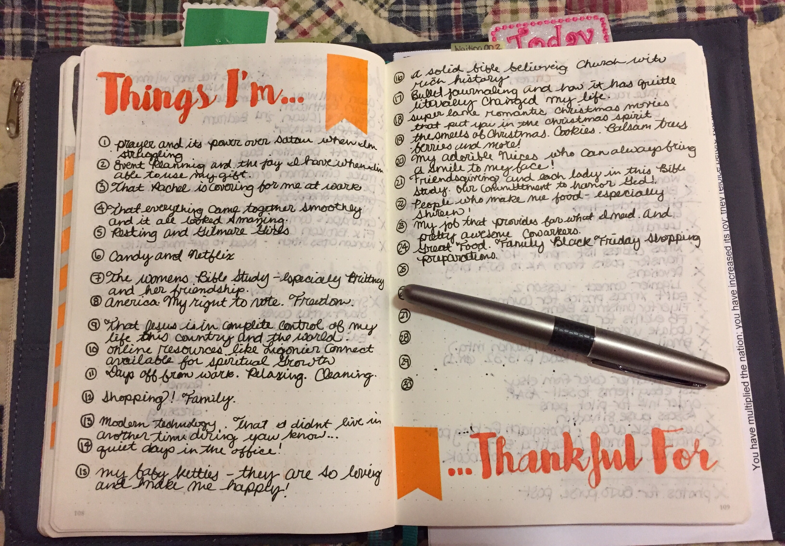

Strategy Two:
Write What You're Thankful For Each Day!
Take some time out of your day to write down things you are thankful for. This is a very effective way for you to reenergize your brain with good thoughts. Studies have shown that focusing on the things you are thankful for can make not only the holidays less stressful, but also your life in general. Robert A. Emmons administered a study among University of California students that were to write down things they were grateful for every day for 21 days. Over this time, participants reported more frequent exercise habits, fewer physical ailments, optimism for the future, and felt better about life in general. Another recorded benefit to this study was the progress towards important goals; remember strategy #1?